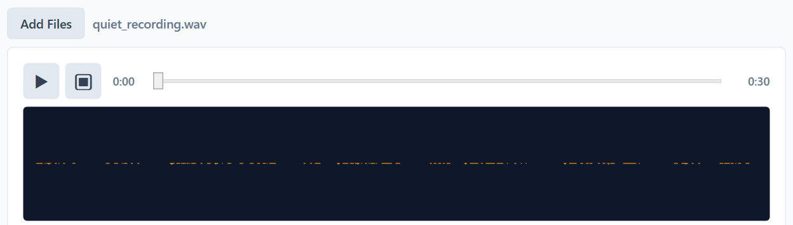
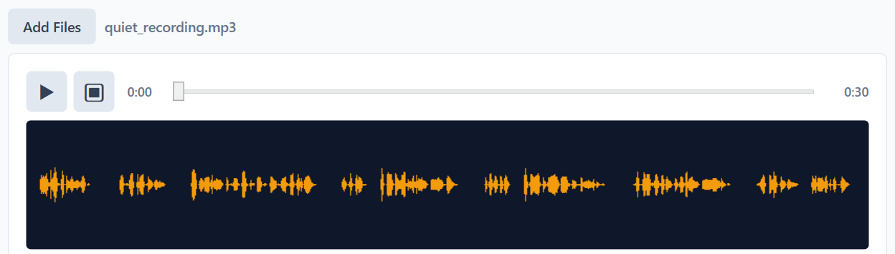
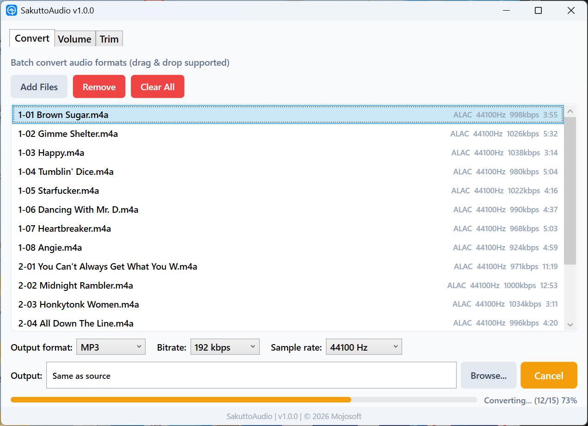
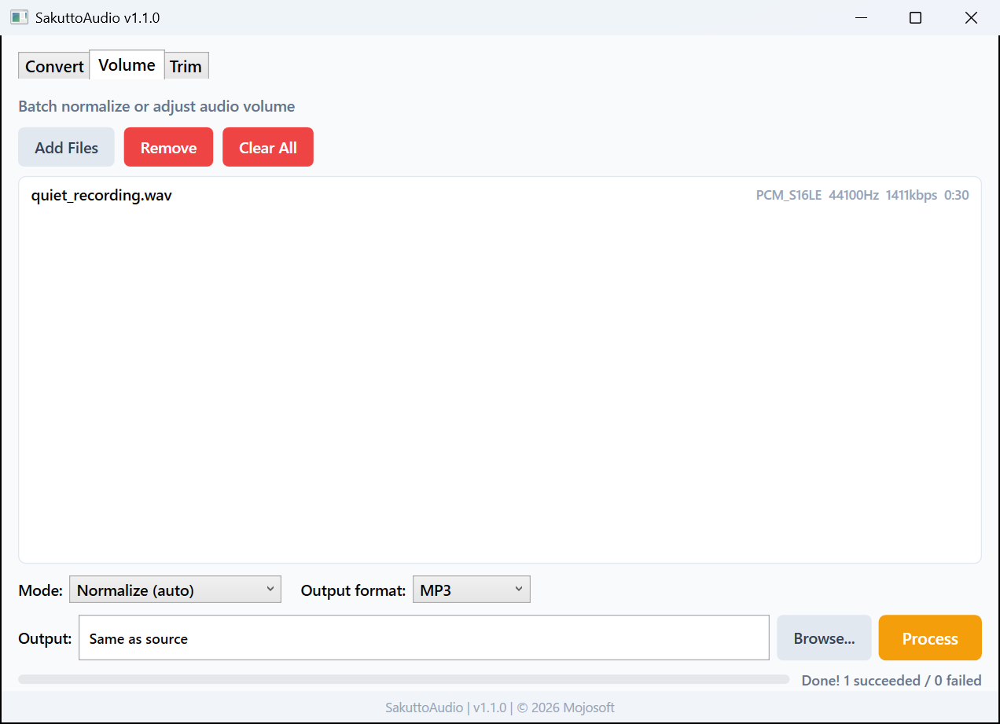
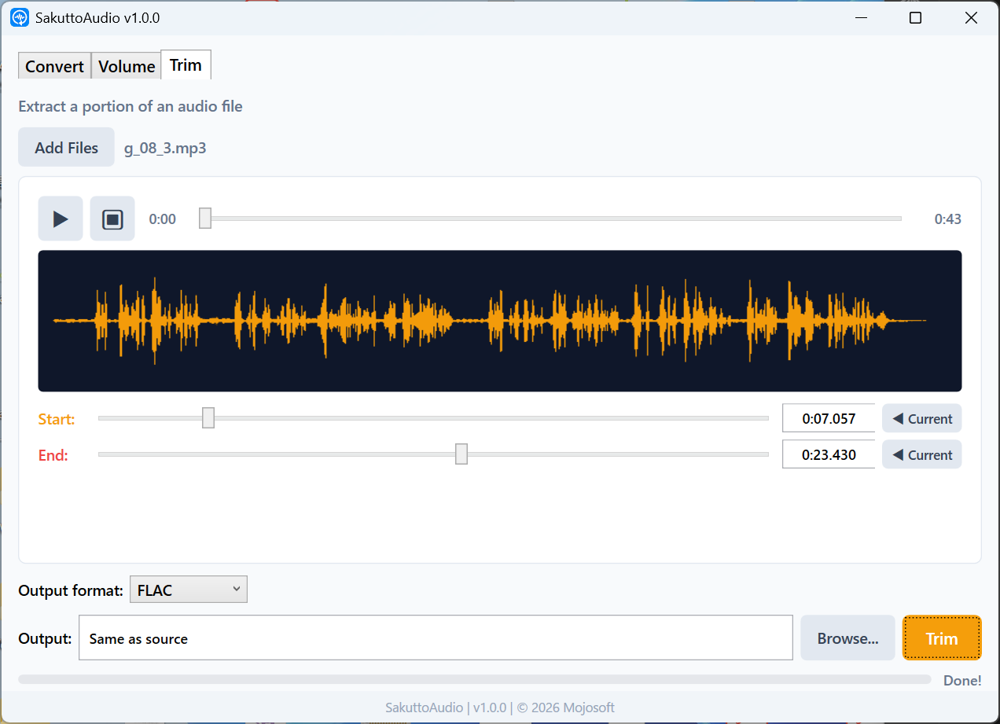

v1.1.1
- Updated the app's runtime (.NET) to the latest long-term support version for improved security
Normalizing brings your recordings to an even, comfortable level. Converting to MP3, WAV, FLAC and more, and trimming with the waveform in view, are in the same app. Everything runs on your PC.


Both screens show the same recording, before and after processing, opened in the app's waveform view.
Loudness −42.2 → −15.9 LUFS (measured with FFmpeg's ebur128). The source is the narration of a 30-second promo video, lowered by 22 dB, then normalized. Normalizing follows the broadcast standard EBU R128 and aims for about −16 LUFS.
Buy it on the Microsoft Store and start right away. No sign-up for the app.
FirstAdd your audio
Drag and drop audio files. Convert and Volume handle as many files as you like in one go. Common formats such as MP3, WAV and M4A open as they are.

NextChoose the result
Pick the format, bitrate and how to adjust the volume. Volume offers "Normalize (auto)" and "Adjust (dB)".

ThenPress start
Results are saved as new files, so your originals stay untouched. When trimming, set the start and end with the waveform in view.

Three everyday tasks — just switch tabs.
Bring recordings that are too quiet or too loud to a comfortable level.
Raise or lower the volume by exactly as many dB as you want.
Convert to MP3, WAV, FLAC, AAC (M4A) or OGG — many files at once.
Cut out just the part you need, with the waveform in view.
FFmpeg, the engine that processes the audio, is built into the app.
Results are always saved as new files.
Get the audio files you have into the format and level you need.
Normalize them to a level that's easy to follow — before you listen again or transcribe.
Process many files together so they all sit at the same level.
Batch-convert to MP3, which plays on almost any device.
Cut the useful part out of a long recording with the waveform in view.
Unlike online converters, nothing is uploaded anywhere.
No audio or file names are ever sent to the developer (Mojosoft). No account, no usage tracking. See the Privacy Policy for details.
Common audio formats open as they are.
| Input | MP3WAVFLACAACM4AOGGWMAAIFFOpusAC3Playback in the Trim tab is not available for some formats (you can still trim them). |
|---|---|
| Output | MP3WAVFLACAAC (M4A)OGG Available in Convert, Volume and Trim |
| Location & names | Next to the original, or in a folder you choose. The name stays the same (the extension follows the format); if a file with that name exists, a number such as "_1" is added instead of overwriting. |
| App language | English and Japanese (follows your Windows language setting) |
| Requirements | Windows 10 (version 2004) or later, 64-bitAudio is processed with FFmpeg (LGPL v2.1), which is built into the app. |
Yes. Choose "Normalize (auto)" in the Volume tab and press Process. The volume is evened out following the broadcast standard EBU R128, aiming for about −16 LUFS.
Yes. Add the files together and they are processed one after another automatically.
Yes. Results are always saved as new files. If a file with the same name exists, a number is added, so nothing is overwritten.
Yes. Choose MP3 in the Convert tab to convert them in one go.
Yes. In the Trim tab, set the start and end with the waveform in view, then trim.
Yes. "Adjust (dB)" lets you set anything from −20 to +20 dB.
Yes. Converting and adjusting volume happen on your PC with the FFmpeg built into the app.
Yes. Buy it once on the Microsoft Store and keep using it with no monthly fee.
The Microsoft Store version updates automatically.
Bug reports & feature requests
Report them on GitHub Issues.
Contact
Email: support@mojosoft.biz